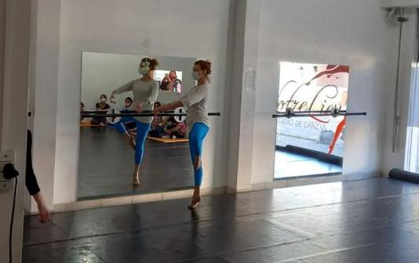
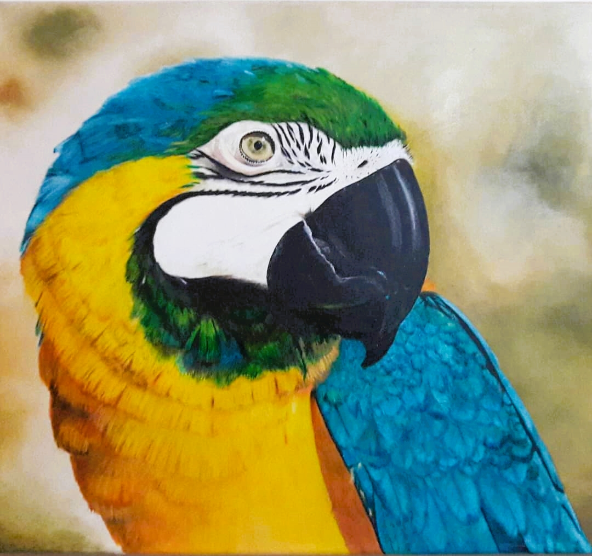
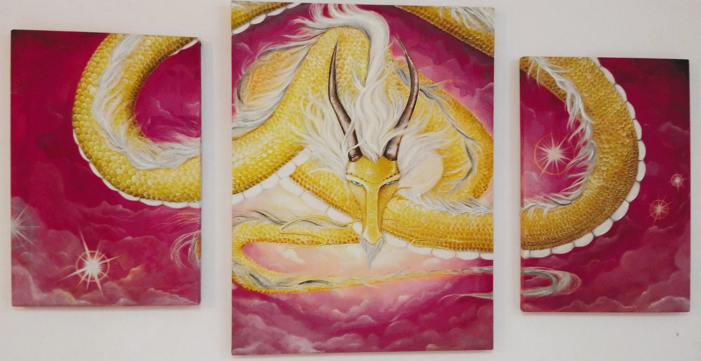
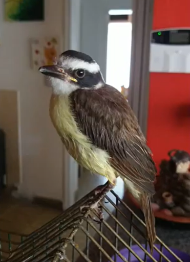

Si bien la creación y el estudio de la música ocupa casi el cien por cien de mi tiempo, de vez en cuando me permito hacer otras cosas, algunas no muy destacables como ver netflix, leer, juegos en PC, etc... Y entre otras las siguientes:
-
Danza
Descubrí en la danza una disciplina de gran autoexigencia, que requiere el desarrollo de la consciencia corporal, además una herramienta de tortura en ojos ajenos. Desde mediados del 2013 doy mis pasos aprendiendo danza en "Notre Lieu" de la mano de Pamela y Lorena Villagra, tristemente no haciendo demasiado honor a sus enseñanzas.
 -
Pintura
La profesora Natalia Dezeo me dio la base para aprender a trabajar el oleo, luego ya fui experimentando
 


-
Aprender Violoncello
Me apasionan la mayoria de los instrumentos, especialmente los de cuerdas, y el sonido aterciopelado del Violoncello, en el conservatorio de Bahia Blanca tuve la suerte de tener de profesor a Gabriel Falcioni, maravilloso músico.
-
Algunas Participaciones en Operas y Caracterizaciones
Participar en producciones de Opera haciendo roles como cantante han sido momentos de vital importancia. Algunas de las obras fueron: Apollo et Hyacinthus, La Traviatta, La Cenerentolla, La Flauta Magica, Ana Bolena, Rigoletto, La opera de los tres centavos, La voz humana, entre otras...

-
Rescatar aves
Aunque no siempre sale bien, me gusta dar una mano a los pequeños amigos emplumados cuando lo precisan
